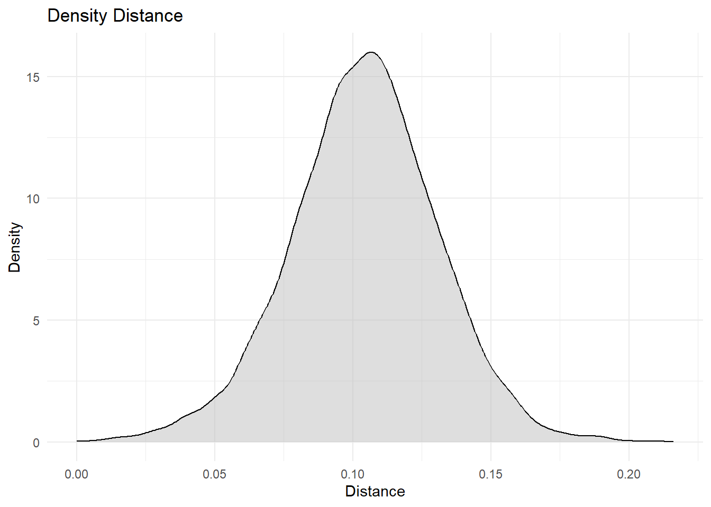

#They achieve this through the parsing of the product descriptions provided by firms 10-K filings and creating word vectors. Specifically, the authors identify and exclude proper nouns, which include common words and geographic locations. They then create word vectors for each firm and year, which enables the measurement of product similarity over time.From Text to Insight - A Novel Approach to Measuring Business Model Innovation
Abstract
The ability of a company to continuously innovate its business model is a pivotal determinant of long-term success in dynamic markets. It is therefore crucial to ensure the reliability of business model innovation measurement. In this study, we utilise business descriptions from 10-K filings between 2017 and 2023 to measure business model innovation. We find that (…). These findings offer insights into the extent to which textual similarities in regulatory reports can be employed as a reliable indicator for business model innovation. Thus, this method represent a novel approach to analyzing business model innovation over time.
Keywords
10-K, Business Model Innovation, BERT, Gemini
Introduction
Business model innovation (BMI) is a key activity to maintain competitiveness and even gain a competitive advantage in todays fast paced markets (Pucihar et al. 2019; Teece 2018). It is therefore no surprise that the interest in BMI has grown rapidly over the last twenty years. In particular, research examining the impact of BMI on firm performance has been a prominent area of investigation, with numerous research papers published in this field (Cucculelli and Bettinelli 2015; Latifi, Nikou, and Bouwman 2021; Zott and Amit 2008; White et al. 2022). While the financial literature offers a wide range of established methods for measuring a company’s performance, the BMI literature provides only a limited number of measures, all of which face similar challenges (White et al. 2022). Furthermore, these measures vary largely. In order to further validate and advance the BMI research field, more sophisticated and comprehensive measurement instruments are necessary (Huang and Ichikohji 2023).
Scales and measures used in the BMI literature (Clauss 2017; Spieth and Schneider 2016) provide managers and practitioners with a measurement index for business model innovativeness. But these measures only validate applicability of BMI theory (Huang and Ichikohji 2023) and are insufficient for longitudinal studies (Clauss 2017). Hence, these measures are not adequate for a time series analysis of BMI. We address this gap by proposing a novel approach to measuring BMI. US-based companies are obliged by the United States Security and Exchange Commission (SEC) to submit annual 10-K filings, wherein a detailed description of the company’s business operations is required. Hoberg & Phillips (2016), on which we build this study, use these filings to cluster companies into industries. We, on the other hand, summarize these descriptions with Gemini and calculate the BERTScore between the summaries of different years for a single company. This approach enables the measurement of changes in the business model (BM) over time as the distance between the BM summary of one year to another. In order to test the validity of our measure, we regress revenue growth on our measure. Additionally, we use our own industry classification based on the BERTScore of different companies in the same year.
- Key findings and Contribution
The SEC mandates that the majority of public companies based in the United States submit an annual 10-K filing. In the first section under the subtitle “Business,” a company presents its general business, encompassing information about its products and services. In some instances additional topics may be addressed, such as labor issues or competition (SEC 2024). In conclusion, this section contains the most useful information for describing a company’s BM (Lee and Hong 2014). Furthermore, 10-K filings are a reliable source of information, given that US law prohibits false or misleading statements in the filings. The SEC monitors the compliance of the companies with the requirements and comments where disclosure appears to be inconsistent (SEC 2024).
- paragraph 5 (robustness checks)
Despite the growing interest in BMI and the increasing number of theoretical and empirical studies in this field, the research of BMI is still in a preliminary state (Huang and Ichikohji 2023). Consequently, there is considerable variation in the definitions of BMI, with some definitions being more similar to one another than others (Foss and Saebi 2017). Spieth & Schneider (2016) identify three core dimensions that comprise a company’s BM: its value proposition, its value creation architecture and its revenue model logic. Based on this, BMI can be conceptualized as a change that is new-to-the-firm in at least one of these dimensions. Furthermore, Spieth and Schneider (2016) introduce a measurement model to evaluate these three dimensions of BMI. They develop an index by first specifying the contents, followed by a specification of the indicators and assessing their content validity, assessing the indicators collinearity and finally assessing the external validity. Clauss (2017) employs a very similar approach. After specifying the domain and dimensionality of BMI through literature research, the author divides his scale into three hierarchical levels, which are very similar to the ones of Spieth and Schneider (2016). We build on these conceptualizations to design our prompt we use in the preprocessing with Gemini. However, both measures are subject to three significant limitations. Firstly, both measures lack a temporal component. Consequently, they are inadequate for use in longitudinal studies or ex-post evaluations of BMI. Secondly, BMI is only measured at the new-to-the-firm level rather than at the new-to-the-industry or new-to-the-market level. Thirdly, both measures rely on interviews and questionnaires, which makes conducting large-scale studies time-consuming and reliant on the willingness of the companies to cooperate (Clauss 2017; Spieth and Schneider 2016). Our novel measurement approach tackles the first and third issue.
A number of studies have examined the relationship between BMI and the financial performance of a company. Cucculelli & Bettinelli (2015) investigate the effect of BMI on sales growth, return on sales (ROS) and total factor productivity (TFP). The results support the hypothesis that BMI has a positive effect on firm performance, with the effect increasing in line with the intensity of the innovation. Brannon & Wiklund (2016) examine the BM of wineries in the state of New York. They use a firms revenue growth as a measure for firm performance. Their research shows that BMI is an important factor for small companies to improve firm performance. Desyllas et al. (2022) find that BMI has a small effect on performance of incumbent firms. They measure firm performance by Tobin’s Q growth. White et al. (2022) conducted a meta-analysis based on the extant BMI literature. They found a positive relationship between BMI and firm performance, and that this relationship is shaped by factors including the firm age, industry, the economic and political environment and BMI characteristics. Based on this, we derive the dependent and control variables in the estimation strategy.
Hoberg & Phillips (2016) present a novel approach to defining industry boundaries. They propose two novel industry classification methods: the fixed industry classification (FIC) and the text-based network industry classification (TNIC). Firstly, they cluster companies based on the similarity of word vectors into fixed industries. Secondly, they define a minimum similarity threshold, above which firms are considered in the same industry. This relaxes their prior properties of binary membership transitivity and fixed industry location. This way the authors demonstrate shortcomings in the traditional industry classification systems such as the Standard Industry Classification (SIC) and the North American Industry Classification System (NAICS), which are not able to account for temporal changes. The new method is capable of capturing changes in industry boundaries and competitor sets over time, thereby providing a dynamic industry classification system. Based on the FIC we propose our own BERTScores industry classification and utilize it in our estimation. In their study, Lee & Hong (2014) examine the evolution of a firm’s BM over time. After filtering the Item 1 parts of the 10-K filings for relevant sentences, Lee & Hong (2014) construct keyword vectors, which represent the concept of the BM. Therefore, the evolution of the BM is depicted as the change in the distribution of keywords over time. The authors advocate for a more robust methodology, such as incorporating multi-word phrases in the keyword vectors, to enhance the reliability of the approach (Lee and Hong 2014). Our study pursues a similar goal but with a novel methodology.
The rest of the paper proceeds as follows. Section 2 describes the preprocessing with Gemini, our data and our methodology. Section 3 our estimations strategy. Section 4 provides a comparison of the BERTScore Classification and the FIC as well as the discussion of our results. Section 5 concludes our study.
Data and Methodology
The Dataset
We collect 10-K filings from the digital SEC Database, using the category “10-K” as extraction condition. Since the focus of our study lies on company’s BM, we merely use the Item 1 part, since this is the most crucial part of the 10-K filings for describing the companies BM (Lee and Hong 2014). Our observations are limited to an intersection of such companies, which on the one hand has been made available to the SEC since 2001 in a publicly accessible list of 10,284 companies (Appendix), of which 7,590 are currently listed on NASDAQ, NYSE or over-the-counter. We extracted 10-K filings that were submitted between 2017 and 2023 based on underlying Central Index Keys (CIK). We exclude companies from the financial sector, namely companies with a SIC Code starting with six. Corresponding to Table 2, multiple steps of pre-processing were required to obtain the final amount of 21,683 observations for seven years. Financial key figures, including net income, total assets and others were originally extracted from the SEC, but also challenged with financial values from DataStream. A total of 4,225 companies are included in the sample, although the availability of filings could not always be guaranteed for all years. This is due on the one hand to the quality of the API to the SEC and on the other hand to companies that did not file 10-K reports or were listed on the stock exchange for the entire period under review. Finally, we have access to the financial key figures of the companies for the respective year, the Item I text pre-processed with the help of Gemini, company-specific identification features and the conventional SIC industry classification.
BERT and BERTScore
BERT is a pre-trained and transformer-based model for natural language processing (NPL) based on artificial neural networks. It works according to the so-called transformer architecture, which was first mentioned by Vaswani et al. (2017). According to these authors, this architecture consists of two main components, the encoder and the decoder. The encoder consists of several identical layers, which initially use the so-called self-attention mechanism to generate context-dependent representations of each word in the sentence. This mechanism can be parallelized and therefore enables different aspects of the context to be captured in the same way. The decoder, on the other hand, works in a similar way and is responsible for processing the information from the encoder and forming it into an output sequence. However, this is not relevant for BERT, as no sequence-to-sequence transformation is carried out in BERT. In contrast to Hoberg & Philips (2016) word-to-vec approach, BERT works bidirectional and takes into account the context from both sides of each word simultaneously. Therefore, BERT is able to capture deeper semantics in texts such as 10-K reports. The BERTScore now computes the cosine similarity between word or text meanings, that have been determined by representations (or embeddings) learned from BERT. The scale is from -1 to 1, where 1 describes a perfect similarity.
Preprocessing with Gemini
10-K filings are typically very large text documents, and Item 1 of these filings is no exception. Table 2 shows the descriptive measures of the length of the original Item 1 section in our final sample. The length of a document was measured by the word count without punctuation. The document length ranges from a minimum if 49 words up to 78,799 words. On average the documents are between 6,626 and 10,304 words long. In order to utilise the entirety of the information regarding the BM in the Item 1 section and pass the text to our BERT model, we decided to let Google’s GenAI chatbot Gemini summarize them to a maximum length of 512 tokens. The summaries were created between 26 June 2024 and 6 August 2024. The model employed was Gemini Flash 1.5. The prompt was inserted at the beginning of each text file and it was passed via an API to Gemini 1. Our prompt covers all aspects of the definition of BMI proposed by Spieth & Schneider (2016). For more details, see Appendix A. To assess the quality and accuracy of the summaries produced by Gemini, a random sample of 100 filings was selected for comparison with the original text. More precise,the original file was initially read with a focus on the points mentioned in the prompt. Subsequently, the summary was evaluated to ascertain whether it contained these same points. A list of the sample with the summaries is provided in the Appendix.
Methodology
After processing the data, we calculate the BERTScore between the summaries of different companies in one year and between the summaries for the same company over different years. The similarity between different companies in the same year is utilized to compare our BERTScore industry classification with the FIC by Hoberg & Phillips (2016) and the SIC. For the FIC, Hoberg & Phillips (2016) calculate the cosine similarity between word vectors of product descriptions, which they extracted from Item 1 of the 10-K filings. For our Industry classification we utilise the BERTScore to calculate the similarity between our BM summaries. Based on these similarites we cluster the companies into industries via an agglomerative clustering algorithm. The methodology and object of research differ between the two studies. In accordance with the definition provided by Spieth & Schneider (2016), a company’s product constitutes a component of its value proposition and, consequently, a constituent of the BM. Because the product is thereby entangled with the BM, companies that have similar products might have similar BMs. So despite the different methodology and object of research, we expect a similar distribution as Hoberg for the FIC, which is very granular and contains lot of small industries. Thus, we hypothesize:
H1: Our BERTScore industry classification shows a similar distribution compared to the FIC.
H2: Our BERTScore industry classification has a high overlap with the FIC.
As mentioned, our approach differs from the original paper by Hoberg & Phillips (2016). We fix the company and calculate the BERTScore between the summaries of different years. When a company innovates its BM over time, the 10-K filings change and thus the summaries of these filings. We subtract the BERTScores from one to get the distance instead of the similarity between summaries. Utilizing the distance as our measure yields a more intuitive interpretation: The higher the distance, the more do the BM summaries differ. This allows us to measure the change in a company’s BM. We assume that a company that changes its BM, will not return back to its original BM. Under this assumption our measure measures BMI on the new-to-the-firm level. In the case that our measure is able to measure BMI, we expect to find a positive relationship between our BMI measure and firm performance. Therefore, we hypothesize that:
H3: Our measure for BMI is positively correlated with firm performance.
Estimation Strategy
Following paragraph is still preliminary:
- dependent variables: revenue growth (Brannon and Wiklund 2016), Tobin’s Q [Desyllas, Salter, and Alexy (2022);] Sales Growth (Cucculelli and Bettinelli 2015)
- independent variable: distance between summaries (makes the measure more intuitive; if distance grows/ similarity decreases, summaries are more dissimilar -> BMI)
- controls: firm size as log(TotalAssets) and log(Market Value) (Dang, Li, and Yang 2018; White et al. 2022)
- fixed effects for year and industry (SIC and our BERTScore Classification) (White et al. 2022)
Results and Discussion
Comparison
Our study builds on the idea of Hoberg & Phillips (2016) to utilize text data from 10-K filings to classify companies based on their similarity to each other into dynamic industries. Our approach differs in two ways: Firstly, in contrast to the TNIC and FIC, which employ word-to-vec, our approach utilises BERT to represent text. Accordingly, the BERTScore is employed instead of the cosine similarity as our similarity measure. Secondly, our analysis is focused on the description of the BM rather than on the product descriptions. Nevertheless, in the following subsection, the BERTScore industry classification is compared with the FIC and the SIC.
The data employed for the industry classification with the BERTScore is the same as described in Section 2. The SIC codes come from the SEC website2. For the FIC we have utilized the similarity scores provided by Hoberg-Phillips Data Library.3 The data consists of the gvkeys of two companies, the year and the cosine similarity between these two companies. In order to ensure comparability, only companies present in both the present study’s dataset and that provided by the authors are included in the analysis. Because we use CIKs and accession numbers to identify firms and filings, and the fact that the data library employs Compustat’s gvkeys, the matching of CIKs with gvkeys inevitably results in the loss of some observations. Ultimately, the clustering algorithm was applied to 1,958 firms for the year 2017. Hoberg & Phillips (2016) perform two steps to create the FIC. Firstly, a hierarchical agglomerative clustering algorithm is employed to cluster companies based on their similarity and maximize ex-post within cluster similarity. This enables a classification with any number of clusters. In our dataset, companies are from 320 different SIC codes. Therefore, the number of industries chosen for our industry classification and the FIC is 320. In the second step, the authors compute aggregated word vectors for each industry. These vectors now represent the industries. Subsequently, the similarity between industries and firms is calculated for each of the following years. From the second year onwards, firms are classified according to the industry with which they are most similar. But due to our methodology this step is omitted.
Figure 1 presents a comparison of the distribution of industry size for the BERTScore classification, the FIC and the SIC. Both the BERTScore classification and the FIC show a similar distribution, displaying a leftward skew with the majority of industries comprising fewer than ten firms. The SIC shows as well a left skewed distribution but with most industries only containing one company. The distribution of the FIC is steeper than the on of the BERTScore classification. It is notable that the largest industry in the BERTScore classification comprises only 20 companies, whereas the FIC and SIC contain industries with a greater number of firms, with some exceeding 50. This suggests that the BERTScore classification groups small to medium-sized industries, comprising between two and fourteen firms per industry, with fewer large industries. The FIC also comprises mostly of small to medium-sized industries, with a few larger ones. Despite these minor differences, this supports H1. The degree of homogeneity between the BERTScore classification and the FIC is 0.63, while the completeness is 0.6. This demonstrates only a medium degree of overlap between the two classifications. The Adjusted Rand Index (ARI) (Hubert and Arabie 1985) is situated at 0.0002, which is close to zero, indicating that the overlap is random. These findings do not provide support for H2.
- explain how we further utilize our classification in the estimation
Results
Robustness Checks
Discussion
Conclusion
Acknowledgement
- Jonathan for IT Support
- Prof. Kranz for Repo
References
Brannon, David L, and Johan Wiklund. 2016. “An Analysis of Business Models: Firm Characteristics, Innovation and Performance.” Academy of Entrepreneurship Journal 22 (1): 1–20.
Clauss, Thomas. 2017. “Measuring Business Model Innovation: Conceptualization, Scale Development, and Proof of Performance.” R&D Management 47 (3): 385–403. https://doi.org/10.1111/radm.12186.
Cucculelli, Marco, and Cristina Bettinelli. 2015. “Business Models, Intangibles and Firm Performance: Evidence on Corporate Entrepreneurship from Italian Manufacturing SMEs.” Small Business Economics 45 (2): 329–50. https://doi.org/10.1007/s11187-015-9631-7.
Dang, Chongyu, Zhichuan Frank Li, and Chen Yang. 2018. “Measuring Firm Size in Empirical Corporate Finance.” Journal of Banking & Finance 86: 159–76.
Desyllas, Panos, Ammon Salter, and Oliver Alexy. 2022. “The Breadth of Business Model Reconfiguration and Firm Performance.” Strategic Organization 20 (2): 231–69. https://doi.org/10.1177/1476127020955138.
Foss, Nicolai J., and Tina Saebi. 2017. “Fifteen Years of Research on Business Model Innovation: How Far Have We Come, and Where Should We Go?” Journal of Management 43 (1): 200–227. https://doi.org/10.1177/0149206316675927.
Hoberg, Gerard, and Gordon Phillips. 2016. “Text-Based Network Industries and Endogenous Product Differentiation.” Journal of Political Economy 124 (5): 1423–65. https://doi.org/10.1086/688176.
Huang, WenJun, and Takeyasu Ichikohji. 2023. “A Review and Analysis of the Business Model Innovation Literature.” Heliyon 9 (7): e17895. https://doi.org/10.1016/j.heliyon.2023.e17895.
Hubert, Lawrence, and Phipps Arabie. 1985. “Comparing Partitions.” Journal of Classification 2 (1): 193–218. https://doi.org/10.1007/BF01908075.
Latifi, Mohammad-Ali, Shahrokh Nikou, and Harry Bouwman. 2021. “Business Model Innovation and Firm Performance: Exploring Causal Mechanisms in SMEs.” Technovation 107 (September): 102274. https://doi.org/10.1016/j.technovation.2021.102274.
Lee, Jihwan, and Yoo S. Hong. 2014. “Business Model Mining: Analyzing a Firm’s Business Model with Text Mining of Annual Report.” Industrial Engineering and Management Systems 13 (4): 432–41. https://doi.org/10.7232/iems.2014.13.4.432.
Pucihar, Andreja, Gregor Lenart, Mirjana Kljajić Borštnar, Doroteja Vidmar, and Marjeta Marolt. 2019. “Drivers and Outcomes of Business Model Innovation—Micro, Small and Medium-Sized Enterprises Perspective.” Sustainability 11 (2): 344. https://doi.org/10.3390/su11020344.
SEC. 2024. “Investor Bulletin: How to Read a 10-K.” https://www.sec.gov/files/reada10k.pdf.
Spieth, Patrick, and Sabrina Schneider. 2016. “Business Model Innovativeness: Designing a Formative Measure for Business Model Innovation.” Journal of Business Economics 86 (6): 671–96. https://doi.org/10.1007/s11573-015-0794-0.
Teece, David J. 2018. “Business Models and Dynamic Capabilities.” Long Range Planning 51 (1): 40–49. https://doi.org/10.1016/j.lrp.2017.06.007.
Vaswani, Ashish, Noam Shazeer, Niki Parmar, Jakob Uszkoreit, Llion Jones, Aidan N Gomez, Lukasz Kaiser, and Illia Polosukhin. 2017. “Attention Is All You Need.(nips), 2017.” arXiv Preprint arXiv:1706.03762 10: S0140525X16001837.
White, Joshua V., Erik Markin, David Marshall, and Vishal K. Gupta. 2022. “Exploring the Boundaries of Business Model Innovation and Firm Performance: A Meta-Analysis.” Long Range Planning 55 (5): 102242. https://doi.org/10.1016/j.lrp.2022.102242.
Zott, Christoph, and Raphael Amit. 2008. “The Fit Between Product Market Strategy and Business Model: Implications for Firm Performance.” Strategic Management Journal 29 (1): 1–26. https://doi.org/10.1002/smj.642.
Appendix
Appendix A
We used following prompt: “Summarize the business model from the following text. Answer with a continuous text and with five hundred twelve tokens at max. Set your focus on sources of revenue, the intended customer base, products, distribution channels and details of financing. Use only information from the following the text”.4 “intended customer base” and “product” refer to the value offering, “distribution channels” refers to the value architecture, and “sources of revenue” and “details of financing” refer to the revenue model. The term ‘tokens’ was used deliberately in preference to ‘words’, given that the number of tokens and the number of words in a text may vary depending on the tokeniser. This way, we wanted to ensure that the whole summary is used by the BERT model.
- Descriptive Table3 for length of summary
Appendix B

Footnotes
We forked and used following Github repository: https://github.com/skranz/gemini_ex.↩︎
The list can be found here: https://www.sec.gov/search-filings/standard-industrial-classification-sic-code-list.↩︎
For the database see: https://hobergphillips.tuck.dartmouth.edu.↩︎
The spelling error in the last sentence of the prompt was found after processing Item 1. After evaluating the summaries, this error did not cause any issues.↩︎